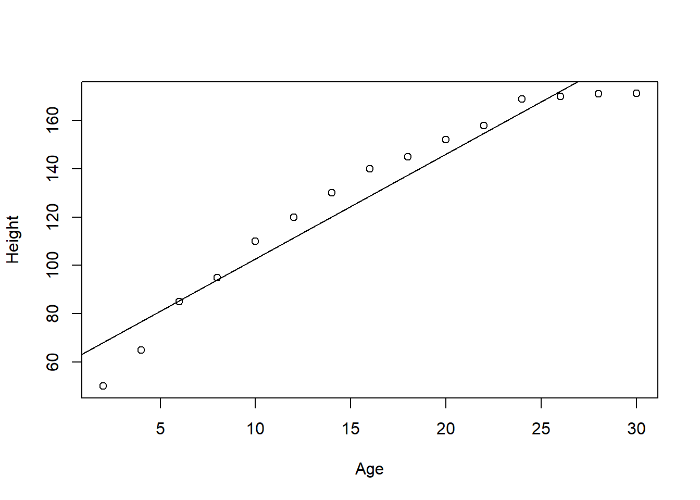
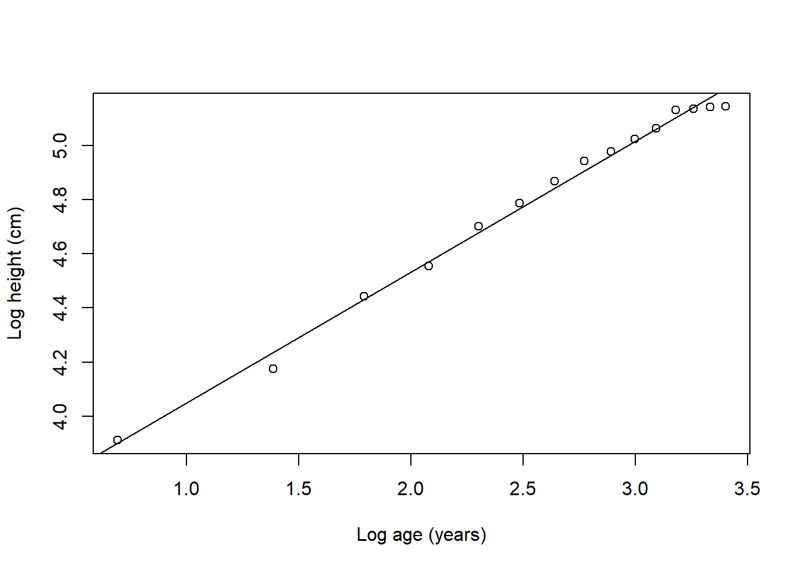

Non-linear regression
There will be numerous instances in which a variable Y does not relate linearly to a variable X. Think the growth of people, for instance.
Early in life a person will grow fast, but over time this growth will reduce, eventually leveling off. These types of relationships are not well described with linear models; and there is where non-linear models come in.
In R, non-linear regression models are handled with an specific function call \(nlm\), but you can also linearize the variable and use the linear model you used before.
Take the example below, showing the relationship between age and height of a random person. Let’s start by fitting a linear model to it.
#let's create a variable for height (dependent variable) and other for age (independent variable)
Age=c(2,4,6,8,10,12,14,16,18,20,22,24,26,28,30)
Height=c(50, 65,85, 95, 110, 120,130,140,145, 152, 158, 169, 170, 171, 171.2)
LM=lm(Height~Age) #here is the linear model
plot(Height~Age)
abline(coef = coef(LM))
##
## Call:
## lm(formula = Height ~ Age)
##
## Residuals:
## Min 1Q Median 3Q Max
## -18.257 -5.947 3.235 7.426 11.253
##
## Coefficients:
## Estimate Std. Error t value Pr(>|t|)
## (Intercept) 59.3638 5.6038 10.59 9.18e-08 ***
## Age 4.3364 0.3082 14.07 3.03e-09 ***
## ---
## Signif. codes: 0 '***' 0.001 '**' 0.01 '*' 0.05 '.' 0.1 ' ' 1
##
## Residual standard error: 10.31 on 13 degrees of freedom
## Multiple R-squared: 0.9384, Adjusted R-squared: 0.9337
## F-statistic: 198 on 1 and 13 DF, p-value: 3.028e-09The \(R^2\) is pretty good, \(r^2\)=0.9383925.
You can try a non-linear model, by transforming the data…there are numerous types of transformations possible, and many will give you different types of fit using linear models. Here is where an approach called model selection comes in, which is to find which of all models to fit to the data is the best. That is quite an endeavor that we will not cover in this basic stats class, but you should know that selecting among different types of models is non-trivial.
For for the sake of seeing how a non-linear model is done, let’s try a logarithmic transformation of the data used above for height and age.
Age=c(2,4,6,8,10,12,14,16,18,20,22,24,26,28,30)
Height=c(50, 65,85, 95, 110, 120,130,140,145, 152, 158, 169, 170, 171, 171.2)
#to log transform simply use the log function:
LogHeight=log(Height) #log transforming the variable Y
LogAge=log(Age) #log transforming the variable X
LogLM=lm(LogHeight~LogAge) #now we re-run the model, but with the transformed variables
plot(LogHeight~LogAge, ylab=("Log height (cm)"), xlab=("Log age (years)"))
abline(coef = coef(LogLM))
##
## Call:
## lm(formula = LogHeight ~ LogAge)
##
## Residuals:
## Min 1Q Median 3Q Max
## -0.06615 -0.01057 0.01062 0.02135 0.03612
##
## Coefficients:
## Estimate Std. Error t value Pr(>|t|)
## (Intercept) 3.56706 0.02982 119.6 < 2e-16 ***
## LogAge 0.48275 0.01120 43.1 2.04e-15 ***
## ---
## Signif. codes: 0 '***' 0.001 '**' 0.01 '*' 0.05 '.' 0.1 ' ' 1
##
## Residual standard error: 0.03277 on 13 degrees of freedom
## Multiple R-squared: 0.9931, Adjusted R-squared: 0.9925
## F-statistic: 1858 on 1 and 13 DF, p-value: 2.043e-15You can now see how this non-linear modeling of the variables gives you an even better \(r^2\)=0.9930516.
There are numerous complexities to the use of non-linear models, that will not be addressed here…the main goal at this introductory level is to know that regression modeling can be done in non-linear relationships.